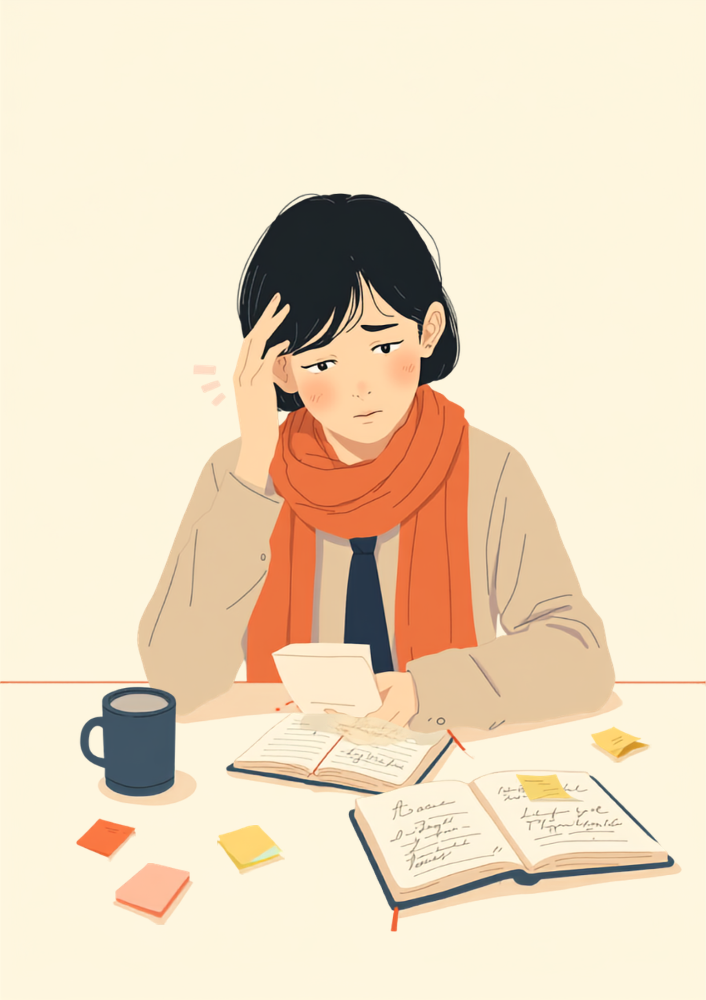
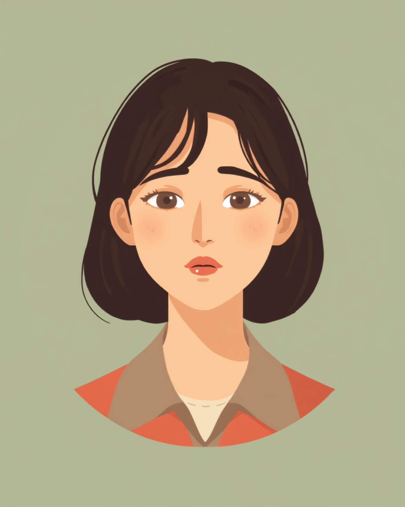

「さっき言いましたよね」と言われるたびに、体がすっと縮こまる感覚がある。頭では分かっているはずなのに、思い出せない。メモは取ったはずなのに、そのメモをどこに書いたかも思い出せない。高次脳機能障害の記憶障害がある方の中には、こうした場面を仕事の中で繰り返し経験している方がいるようです。この記事では、記憶障害が仕事にどう影響しやすいか、職場でできる工夫、使える制度や相談先を、就労支援の現場経験から整理しました（2026年8月時点の情報です）。
PR



メモは取ったはずなのに、どこに書いたかを思い出せない
「さっき教わったのに、もう思い出せない」が繰り返される

高次脳機能障害は、事故や病気による脳の損傷によって、記憶・注意・遂行機能などに特性が現れることがあるとされています。原因や症状の程度には個人差があるため、気になる症状がある場合は医療機関にご相談ください。まめざる
就労支援の現場で関わってきた中で、こんな声を聞いたことがあります。「朝の朝礼で言われたことを、お昼にはもう思い出せないんです」というものです。メモを取ること自体は習慣にしているのに、そのメモをどこに書いたか、あるいはメモを取ったこと自体を忘れてしまう。そんな経験を繰り返すうちに、「また同じことを聞いてしまった」という申し訳なさが、じわじわと積み重なっていくようです。
本人にとっては、決してさぼっているわけでも、話を聞いていなかったわけでもありません。頭の中には確かに聞いた記憶があるはずなのに、それを引き出す道筋がうまくつながらない、そんな感覚に近いのかもしれません。周囲から見えにくい特性だからこそ、「やる気がない」「注意力が足りない」と誤解されやすい側面もあるようです。
!
記憶障害の現れ方には個人差があります。この記事で挙げる内容がそのまま当てはまるとは限らないため、気になる症状がある場合は自己判断せず、医療機関やリハビリテーション専門職にご相談ください。
「事故から2年経つんですけど、正直、体は元気なんです。歩けるし、力仕事も前と同じようにできます。でも、朝の朝礼で言われたことを、お昼にはもう覚えてなくて。『さっき言いましたよね』って言われるのが一番きつくて、また今日もやっちゃった、って自己嫌悪の繰り返しでした。半年くらい前からメモ帳を1冊に決めて、指示は全部その場で書くようにしたら、聞き返す回数はだいぶ減りました。それでも、そのメモをどこに置いたか忘れて、机の上を探し回ることはまだあります。」
40代・男性（交通事故後の高次脳機能障害・総務職）
「倒れたのは大学を卒業したばかりの頃でした。くも膜下出血の手術は無事に済んで、見た目には全然わからないんですけど、頭の中がずっと霧がかかってる感じで。同じ説明を3回聞いても、その場ではわかった気になるのに、次の日にはもう真っ白になってるんです。前の接客の仕事では『やる気がない』って思われてるのが伝わってきて、結局1年で辞めました。今の事務の仕事は最初に事情を伝えてあって、指示はチャットで残してもらうようにお願いしてます。それだけで、だいぶ違いました。」
20代・女性（くも膜下出血術後の高次脳機能障害・事務職）
高次脳機能障害とは何か、記憶障害だけではない特性
高次脳機能障害は、交通事故や転倒などによる外傷性脳損傷、脳卒中（脳梗塞・脳出血）、脳炎などによって脳が損傷を受けた後に現れる、認知や行動面の特性の総称です。記憶障害のほか、注意が散漫になりやすい注意障害、物事の計画や段取りが立てにくくなる遂行機能障害、感情のコントロールが難しくなる社会的行動障害、そしてすぐに疲れてしまう易疲労性など、複数の特性が組み合わさって現れることが多いとされています。
i
見た目には変化がわかりにくいことが多く、周囲から「元気そうなのに」と思われやすい特性でもあります。本人の中では、以前と同じように動けない自分にもどかしさを感じているケースも少なくないようです。
このグラフが示すように、疲れがたまるほど、新しく聞いたことを覚えておく力も一緒に下がっていく傾向があるとされています。だからこそ、疲れてきたタイミングでの新しい指示は特に忘れやすくなりやすく、こまめな休憩をはさむこと自体が、記憶の定着を助ける工夫のひとつになる場合があります。
職場でできる工夫、メモは「取る」よりも「見返す仕組み」
メモを1冊に決めて、必ず同じ場所を見返す
メモを取ること自体はできていても、書く場所がバラバラだと、後から見返せなくなってしまいます。使うノートやアプリを1つに決め、「席に戻ったら必ず開く」など行動とセットにして見返す習慣をつくることが助けになる場合があるとされています。
- 指示を受けたら、その場でメモを取る
- メモは1冊のノート、または1つのアプリに一本化する
- 決まったタイミング（休憩後、退勤前など）に必ず見返す
- メモの最初のページに「今日やること」を書く欄を作っておく
一度にたくさんの指示を受けると、覚えておくべきことが増えて混乱しやすくなります。可能であれば、指示は一つずつ、区切って伝えてもらうようにお願いしてみるのもひとつの方法です。まめざる
疲れやすさ（易疲労性）も一緒に伝えておく
記憶障害だけでなく、疲れやすさも仕事に影響しやすい特性です。40分作業したら10分休む、といったように、あらかじめ休憩のタイミングを決めておくことで、集中力や記憶の定着を保ちやすくなる場合があるとされています。
相談の一コマ

相談者
何度もメモを取ってるはずなのに、そのメモを見返す前に忘れちゃうんです。自分がだめなんだと思ってしまって。
まめざる
記憶障害のある方の中には、メモを取ったこと自体を忘れてしまうという経験をされる方が実際にいらっしゃいます。だめということではなく、脳の働き方の特性としてよく知られていることなんです。
相談者
そうなんですか。じゃあ、どうしたらいいんでしょう。
まめざる
メモを置く場所を1か所に決めて、必ず同じタイミングで見返す習慣とセットにする方法があります。「席に戻ったら必ずノートを開く」というように、行動とセットにすると見返し忘れが減ることがあるようです。
相談者
なるほど、メモを取ることより、見返すほうに工夫がいるんですね。
まめざる
そうなんです。無理のない範囲で、少しずつ試してみてください。うまくいかない日があっても、それは工夫のやり方を調整するチャンスでもありますよ。
職場でのメモの取り方や休憩のタイミングは、症状の程度や業務内容によって最適な形が異なります。この記事の内容がそのまま当てはまるとは限らないため、実際の工夫は主治医やリハビリ専門職、支援者とよく相談しながら進めることをお勧めします（2026年8月時点の情報です）。
職場への伝え方と、使える制度・相談先
症状の全てを話す必要はない
職場に伝える際、症状のすべてを説明する必要はありません。「口頭の指示だけだと覚えづらいので、メモを取る時間をいただきたい」「疲れてくると集中しにくくなるので、休憩を挟ませてほしい」など、業務に関わる具体的な場面に絞って伝える方法をとっている方が多いようです。信頼できる一人や、産業医、人事担当者から少しずつ共有していくところから始めても大丈夫です。
障害者手帳という選択肢
高次脳機能障害の場合、原因や後遺症の内容によって、精神障害者保健福祉手帳の対象になることもあれば、身体障害者手帳の対象になることもあるとされています。どちらに該当するか、また等級については、主治医や自治体の障害福祉窓口に確認するのが確実です（2026年8月時点の情報です）。手帳を取得すると、障害者雇用枠での就職や、企業側の合理的配慮を前提にした働き方を選びやすくなる場合があります。
相談できる窓口
- リハビリテーション科、高次脳機能障害の専門外来
- 自治体の障害福祉窓口、高次脳機能障害支援拠点機関
- 就労移行支援事業所（記憶の工夫を含めた就労準備や職場定着支援）
- 産業医、EAP（従業員支援プログラム）を導入している職場ならそちら
何度も聞き返してしまうことは、頑張りが足りないからではありません。メモを見返す仕組みを整え、疲れやすさも含めて職場に伝えながら、一人で抱え込まずに相談先を持っておくこと自体が、働き続けるための土台になります。
よくある質問
Q. 高次脳機能障害は、どんな原因で起こるのでしょうか？
交通事故や転倒などによる外傷性脳損傷、脳卒中（脳梗塞・脳出血）、脳炎などによる脳の損傷が原因になるとされています。記憶障害のほか、注意障害や遂行機能障害、社会的行動障害、疲れやすさ（易疲労性）など、複数の症状が組み合わさって現れることが多いようです。
Q. 高次脳機能障害は障害者手帳の対象になりますか？
原因や後遺症の内容によって、精神障害者保健福祉手帳の対象になる場合と、身体障害者手帳の対象になる場合があるとされています。どちらに該当するか、また等級については、主治医や自治体の障害福祉窓口に確認することをお勧めします（2026年8月時点の情報です）。
Q. メモを取っても、そのメモ自体を忘れてしまいます。どうすればいいですか？
メモを取る場所を1冊のノートやアプリに一本化し、必ず同じ場所を同じタイミングで見返す習慣をつけることが助けになる場合があるとされています。見た瞬間に用件がわかるよう短く書く、行動とセットにして見返すタイミングを作るといった工夫も有効なケースがあるようです。
Q. 職場にはどう伝えればいいですか？
症状の全てを説明する必要はなく、「口頭の指示は覚えづらいので、メモを取る時間をいただきたい」など、業務に関わる具体的な場面に絞って伝える方法があります。信頼できる一人や、産業医、人事担当者から少しずつ共有していく方法もあります。
Q. 高次脳機能障害があっても、障害者雇用で働けますか？
実際に障害者雇用枠で働いている方もいるとされています。指示を書面やチャットで残してもらう、業務を細かく区切ってもらうなど、記憶や注意にかかる負担を減らす配慮を受けながら働く例もあるようです。求人選びの際は、就労移行支援事業所や障害者向け転職エージェントに相談する方法もあります。
一人で抱え込まず、工夫と相談先の両方を持っておく
PR


一人で抱え込む前に、今の気持ちを話してみませんか
「まだ迷っている」段階でも大丈夫です。mimemimeの無料相談は、今の状況の整理から一緒に始められます。
無料で話してみる
この記事に、聞いてみたいことはありますか？
「自分の場合はどうなんだろう」と思ったことを、気軽に書いてみてください。いただいた質問は個別にお返事したうえで、匿名で記事にすることがあります。
おのざる
mimemime代表。就労支援の現場経験をもとに、障がいのある方の働く不安に寄り添う記事を執筆。